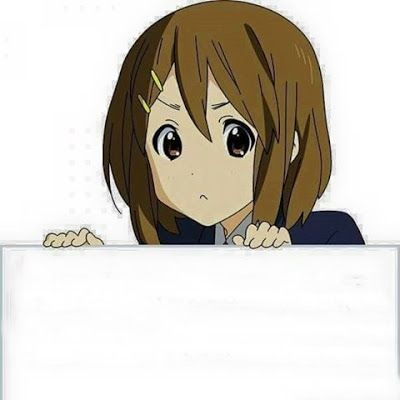

|
 ГЛАВА 1: КТО Я ТАКОЙ И С ЧЕМ МЕНЯ ЕДЯТкак я уже писал в предисловии, звать меня можно джаббом, устрицей или антоном. возможно я чутчут chronically online могу сказать что увлекаюсь говнокодингом (в тч говносозданием сайтиков) и рисованием. люблю: антихайп, читать книжки, сидеть в любимых мною частях инета, играть в видеоигры, в основном в рогалики (подробнее см. главу 2) стараюсь придерживаться новой искренности это все что я хотел сказать! пред. глава/след. глава |